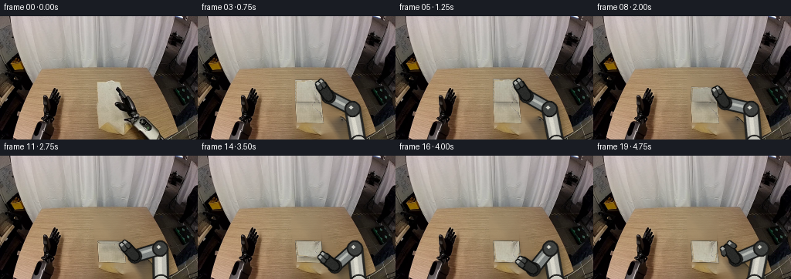
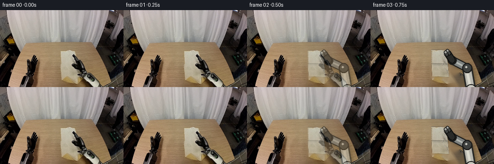

CODING AGENTS AS PIXEL WORLD MODELS
traex/GPT-5.6-Sol · common50_0029
点击播放 · 原生 RGB 像素
逐轮保存的候选
回放视频、检查图与代码变化。
每份候选均可单独播放。实际图片检查记录在下方工具轨迹中。
候选 01播放与检查图
点击播放 · 原生 RGB 像素


展开代码变化
--- 上一保存版本
+++ 本次保存版本
@@ -0,0 +1,242 @@
+"""Deterministic pixel animation of a robot folding the towel in first_frame.png."""
+from pathlib import Path
+import math
+import cv2
+import numpy as np
+from PIL import Image
+import artifact_io
+
+ROOT = Path(__file__).resolve().parent
+FIRST = np.asarray(Image.open(ROOT / "first_frame.png").convert("RGB"), dtype=np.uint8)
+H, W = FIRST.shape[:2]
+
+
+def smoothstep(x):
+ x = max(0.0, min(1.0, float(x)))
+ return x*x*(3.0-2.0*x)
+
+
+def polygon_mask(points, blur=0.0):
+ m = np.zeros((H, W), np.uint8)
+ cv2.fillPoly(m, [np.round(points).astype(np.int32)], 255, lineType=cv2.LINE_AA)
+ if blur:
+ m = cv2.GaussianBlur(m, (0, 0), blur)
+ return m
+
+
+def composite(dst, rgb, alpha):
+ a = alpha.astype(np.float32)
+ if a.max() > 1.01:
+ a /= 255.0
+ if a.ndim == 2:
+ a = a[..., None]
+ return np.clip(dst.astype(np.float32)*(1-a) + rgb.astype(np.float32)*a, 0, 255).astype(np.uint8)
+
+
+# Remove the original cloth and arm. Telea extrapolates the surrounding wood grain,
+# while a low-opacity cloned strip prevents a broad, featureless inpaint patch.
+erase = np.zeros((H, W), np.uint8)
+cv2.fillPoly(erase, [np.array([(121,80),(161,80),(166,136),(174,136),
+ (181,132),(193,138),(213,160),(161,160),
+ (160,150),(151,143),(123,141)], np.int32)], 255)
+# Include the thin dark gripper which lies diagonally over the towel.
+cv2.line(erase, (150,90), (178,141), 255, 17, cv2.LINE_AA)
+bgr = cv2.cvtColor(FIRST, cv2.COLOR_RGB2BGR)
+bg = cv2.cvtColor(cv2.inpaint(bgr, erase, 7, cv2.INPAINT_TELEA), cv2.COLOR_BGR2RGB)
+# Inpaint occasionally makes a pale cloud in this large area. Mix in same-row table
+# texture sampled just left of the towel, with a gentle rightward illumination falloff.
+yy, xx = np.indices((H, W))
+inside = erase > 0
+clone = np.empty_like(bg)
+for x in range(W):
+ sx = 82 + ((x-121) % 39)
+ clone[:, x] = FIRST[:, sx]
+shade = np.clip(1.0 - 0.0015*np.maximum(xx-120, 0), .82, 1.0)[...,None]
+clone = np.clip(clone.astype(float)*shade, 0, 255).astype(np.uint8)
+soft = cv2.GaussianBlur(erase, (0,0), 4).astype(float)/255.0
+# Keep Telea detail dominant, using the clone only to restore fine wooden variation.
+bg = np.clip(bg.astype(float)*(.74 + .26*(1-soft[...,None])) +
+ clone.astype(float)*(.26*soft[...,None]), 0, 255).astype(np.uint8)
+
+# Rectify the original beige towel to a small reusable texture.
+src_quad = np.float32([(124,83),(157,84),(162,138),(127,137)])
+tex_w, tex_h = 38, 56
+to_tex = cv2.getPerspectiveTransform(src_quad, np.float32([(0,0),(tex_w-1,0),(tex_w-1,tex_h-1),(0,tex_h-1)]))
+tex = cv2.warpPerspective(FIRST, to_tex, (tex_w,tex_h), flags=cv2.INTER_CUBIC,
+ borderMode=cv2.BORDER_REFLECT).astype(np.float32)
+# Reconstruct portions hidden by the original black gripper from neighboring weave.
+r,g,b = tex[...,0],tex[...,1],tex[...,2]
+good = (r>125)&(g>120)&(b>105)&(r-g<35)&(g-b<42)&(r<235)
+rng = np.random.default_rng(2901)
+for y in range(tex_h):
+ vals = tex[y][good[y] & (np.arange(tex_w)<27)]
+ if len(vals) < 4:
+ vals = tex[max(0,y-2):min(tex_h,y+3), :22].reshape(-1,3)
+ med = np.median(vals, axis=0)
+ for x in range(tex_w):
+ if not good[y,x]:
+ # Horizontal weave and a slight darker right edge.
+ tex[y,x] = med + rng.normal(0,2.0,3) - max(x-30,0)*0.35
+# Retain visible low-frequency folds, but remove isolated contaminated pixels.
+tex = cv2.GaussianBlur(tex, (3,3), .38)
+# Fine deterministic linen weave.
+ty, tx = np.indices((tex_h,tex_w))
+weave = 1.8*np.sin(tx*2.55) + 1.1*np.sin(ty*2.18)
+tex += weave[...,None]
+tex = np.clip(tex,0,255).astype(np.uint8)
+
+
+def warp_patch(texture, quad):
+ """Warp a texture rectangle to quad TL,TR,BR,BL, returning RGB and alpha."""
+ th, tw = texture.shape[:2]
+ q = np.float32(quad)
+ M = cv2.getPerspectiveTransform(np.float32([(0,0),(tw-1,0),(tw-1,th-1),(0,th-1)]), q)
+ rgb = cv2.warpPerspective(texture, M, (W,H), flags=cv2.INTER_CUBIC,
+ borderMode=cv2.BORDER_CONSTANT, borderValue=0)
+ a0 = np.full((th,tw),255,np.uint8)
+ a = cv2.warpPerspective(a0, M, (W,H), flags=cv2.INTER_LINEAR,
+ borderMode=cv2.BORDER_CONSTANT, borderValue=0)
+ return rgb, a
+
+
+def add_textured_patch(im, texture, quad, brightness=1.0):
+ rgb,a = warp_patch(texture,quad)
+ if brightness != 1.0:
+ rgb = np.clip(rgb.astype(float)*brightness,0,255).astype(np.uint8)
+ return composite(im,rgb,a), a
+
+
+def solve_elbow(wrist, base, l1=35.0, l2=47.0):
+ """Two-link planar IK; use the upper/right, collision-free elbow branch."""
+ w = np.array(wrist,float); b = np.array(base,float)
+ dvec = b-w; d = np.linalg.norm(dvec)
+ d = min(max(d,abs(l2-l1)+.01),l1+l2-.01)
+ u = dvec/(np.linalg.norm(dvec)+1e-8)
+ a = (l1*l1-l2*l2+d*d)/(2*d)
+ hh = math.sqrt(max(0,l1*l1-a*a))
+ mid = w+a*u; perp=np.array([-u[1],u[0]])
+ cands=[mid+hh*perp,mid-hh*perp]
+ # Prefer the point nearer the upper image edge; this is consistent throughout.
+ return min(cands,key=lambda p:p[1])
+
+
+def line_layer(layer, mask, p0, p1, color, width, outline=None, ow=0):
+ a=tuple(np.round(p0).astype(int)); b=tuple(np.round(p1).astype(int))
+ if outline is not None:
+ cv2.line(layer,a,b,outline,width+ow,cv2.LINE_AA)
+ cv2.line(mask,a,b,255,width+ow,cv2.LINE_AA)
+ cv2.line(layer,a,b,color,width,cv2.LINE_AA)
+ cv2.line(mask,a,b,255,width,cv2.LINE_AA)
+
+
+def render_robot(im, pinch, release=0.0, frame_index=0):
+ """Draw a rigid, constant-link-length right arm above the towel."""
+ p=np.array(pinch,float)
+ base=np.array((208.0,166.5))
+ toward=base-p; toward/=np.linalg.norm(toward)+1e-8
+ wrist=p+toward*22.0
+ elbow=solve_elbow(wrist,base)
+
+ # Soft contact/arm shadow on the tabletop.
+ sh=np.zeros((H,W),np.uint8)
+ cv2.line(sh,tuple(np.round(base+[2,2]).astype(int)),tuple(np.round(elbow+[3,3]).astype(int)),170,21,cv2.LINE_AA)
+ cv2.line(sh,tuple(np.round(elbow+[3,3]).astype(int)),tuple(np.round(wrist+[3,3]).astype(int)),160,17,cv2.LINE_AA)
+ cv2.line(sh,tuple(np.round(wrist+[2,3]).astype(int)),tuple(np.round(p+[2,3]).astype(int)),135,11,cv2.LINE_AA)
+ sh=cv2.GaussianBlur(sh,(0,0),3.0).astype(float)/255.0*.37
+ im=np.clip(im.astype(float)*(1-sh[...,None]),0,255).astype(np.uint8)
+
+ lay=np.zeros_like(im); m=np.zeros((H,W),np.uint8)
+ # Rear upper link, forearm, and invariant circular joints.
+ line_layer(lay,m,base,elbow,(186,185,176),14,(37,38,36),5)
+ # Highlight and lower-side bevel preserve a metallic, cylindrical look.
+ off=np.array((-1.3,-1.1))
+ cv2.line(lay,tuple(np.round(base+off).astype(int)),tuple(np.round(elbow+off).astype(int)),(218,216,204),3,cv2.LINE_AA)
+ cv2.line(m,tuple(np.round(base+off).astype(int)),tuple(np.round(elbow+off).astype(int)),255,3,cv2.LINE_AA)
+ line_layer(lay,m,elbow,wrist,(126,130,128),11,(25,26,25),5)
+ cv2.line(lay,tuple(np.round(elbow+off).astype(int)),tuple(np.round(wrist+off).astype(int)),(181,184,178),2,cv2.LINE_AA)
+ cv2.line(m,tuple(np.round(elbow+off).astype(int)),tuple(np.round(wrist+off).astype(int)),255,2,cv2.LINE_AA)
+ for c,rad,col in [(base,10,(201,200,190)),(elbow,8,(63,65,63)),(wrist,7,(48,50,49))]:
+ cc=tuple(np.round(c).astype(int))
+ cv2.circle(lay,cc,rad+2,(25,25,24),-1,cv2.LINE_AA); cv2.circle(m,cc,rad+2,255,-1,cv2.LINE_AA)
+ cv2.circle(lay,cc,rad,col,-1,cv2.LINE_AA); cv2.circle(m,cc,rad,255,-1,cv2.LINE_AA)
+ cv2.circle(lay,(cc[0]-2,cc[1]-2),max(2,rad//3),(205,205,196),-1,cv2.LINE_AA)
+ # Dark rigid wrist barrel.
+ line_layer(lay,m,wrist,p+toward*4,(42,43,41),9,(13,14,13),4)
+ # Parallel jaws close around the towel edge. They remain equal-length and do not deform.
+ n=np.array([-toward[1],toward[0]])
+ jaw_root=p+toward*7
+ gap=3.2 if release<.45 else 3.2+5.0*smoothstep((release-.45)/.55)
+ for s in (-1,1):
+ a=jaw_root+n*s*gap; tip=p+n*s*(gap*.74)
+ line_layer(lay,m,a,tip,(68,70,68),3,(13,14,13),3)
+ cv2.circle(lay,tuple(np.round(tip).astype(int)),2,(170,171,165),-1,cv2.LINE_AA)
+ cv2.circle(m,tuple(np.round(tip).astype(int)),2,255,-1,cv2.LINE_AA)
+ # Fine photographic grain limited to arm pixels.
+ noise=np.random.default_rng(810+frame_index).normal(0,2.2,lay.shape[:2])[...,None]
+ lay=np.clip(lay.astype(float)+noise*(m[...,None]>0),0,255).astype(np.uint8)
+ return composite(im,lay,m)
+
+
+def render_scene(theta, frame_index, release=0.0):
+ im=bg.copy()
+ # Fixed lower half stays planted on the wooden table throughout the manipulation.
+ hl=np.array((126.0,110.2)); hr=np.array((159.2,111.0))
+ bl=np.array((127.8,137.0)); br=np.array((162.0,138.2))
+ lower_tex=tex[27:,:]
+ im,_=add_textured_patch(im,lower_tex,[hl,hr,br,bl],.985)
+
+ # Rigid fold kinematics. The free edge follows a circular arc around the crease.
+ # sin(theta) is physical lift; in this camera it projects upward by 12 pixels.
+ lift=math.sin(theta)
+ c=math.cos(theta)
+ slide=3.0*(1-c)/2.0
+ fl=np.array((126.0+slide, 110.2-26.8*c-11.5*lift))
+ fr=np.array((157.2+slide, 111.0-27.0*c-11.5*lift))
+ upper_quad=[fl,fr,hr,hl]
+
+ # Elevated flap casts a displaced, soft shadow; it tightens again when laid down.
+ shadow_poly=np.array(upper_quad)+np.array((2.2+4.0*lift,2.0+5.0*lift))
+ sm=polygon_mask(shadow_poly,2.0+1.4*lift).astype(float)/255.0
+ im=np.clip(im.astype(float)*(1-(.15+.15*lift)*sm[...,None]),0,255).astype(np.uint8)
+
+ # The underside darkens slightly at mid-fold; final laid surface returns to beige.
+ bright=.98-.13*(math.sin(theta)**1.3)
+ im,ua=add_textured_patch(im,tex[:29,:],upper_quad,bright)
+ # A crisp sewn perimeter and fold crease communicate cloth topology.
+ edge=np.zeros((H,W),np.uint8)
+ q=np.round(np.array(upper_quad)).astype(np.int32)
+ cv2.polylines(edge,[q],True,125,1,cv2.LINE_AA)
+ crease=np.zeros_like(edge)
+ cv2.line(crease,tuple(np.round(hl).astype(int)),tuple(np.round(hr).astype(int)),100,1,cv2.LINE_AA)
+ dark=np.zeros_like(im); dark[:]=(83,76,62)
+ im=composite(im,dark,edge.astype(float)*.34)
+ im=composite(im,dark,crease.astype(float)*.30)
+
+ # Grasp is near the right free corner, inset along both edges.
+ pinch=fr*.88+fl*.02+hr*.10
+ if release>0:
+ # After opening, withdraw smoothly up and right without disturbing the fold.
+ rr=smoothstep(release)
+ pinch=pinch+np.array((12.0*rr,-19.0*rr))
+ im=render_robot(im,pinch,release,frame_index)
+ return im
+
+
+# Deliberate grasp/lift/swing/place/release timeline. Frames 0-1 establish stability.
+angles=[0,0,0, .11,.27,.48,.73,1.00,1.28,1.56,1.83,2.08,2.32,2.54,2.74,2.94,math.pi,math.pi,math.pi,math.pi]
+frames=[]
+for i,theta in enumerate(angles):
+ if i<=1:
+ frame=FIRST.copy()
+ else:
+ release=0.0 if i<=16 else (i-16)/3.0
+ made=render_scene(theta,i,release)
+ if i==2:
+ # A one-frame photographic handoff prevents an artificial pop while closing.
+ frame=np.clip(FIRST.astype(float)*.42+made.astype(float)*.58,0,255).astype(np.uint8)
+ else:
+ frame=made
+ frames.append(frame)
+frames=np.stack(frames).astype(np.uint8)
+frames[0]=FIRST
+artifact_io.save(frames,ROOT)
可观测工具轨迹
实际执行的命令与返回图片。
命令 1exit 0
/bin/bash -lc "cat GENERATION_RULES.md && printf '\\n---PROMPT---\\n' && cat prompt.txt"
命令 2exit 1
/bin/bash -lc "find . -maxdepth 2 -type f -printf '%p\\n' | sort && printf '\\n--- tools ---\\n' && command -v ffmpeg && command -v python3"
命令 3exit 0
/bin/bash -lc "cat task_spec.json; sed -n '1,240p' artifact_io.py"
命令 4exit 0
/bin/bash -lc "python3 - <<'PY'
from PIL import Image
import numpy as np
im=np.array(Image.open('first_frame.png').convert('RGB'))
print(im.shape, im.dtype, im.min(),im.max())
# global unique/count and samples grid
u,c=np.unique(im.reshape(-1,3),axis=0,return_counts=True)
ix=np.argsort(c)[-30:][::-1]
for i in ix: print(c[i],u[i])
print('grid samples')
for y in range(0,160,10):
print(y,[tuple(im[y,x]) for x in range(0,256,16)])
PY"命令 5exit 2
/bin/bash -lc "cat > /tmp/an.py <<'PY'
from PIL import Image
import numpy as np
from sklearn.cluster import KMeans
im=np.array(Image.open('first_frame.png').convert('RGB'))
# kmeans pixels including coords? color only
p=im.reshape(-1,3)
km=KMeans(12,random_state=0,n_init=3).fit(p[::3])
cen=km.cluster_centers_.round().astype(int); print(list(enumerate(cen)))
lab=((p[:,None,:]-cen[None,:,:])**2).sum(2).argmin(1).reshape(160,256)
chars='0123456789AB'
# blocks majority 4x4
for y in range(0,160,4):
s=''
for x in range(0,256,4):
vals=np.bincount(lab[y:y+4,x:x+4].ravel(),minlength=12)
s+=chars[vals.argmax()]
print(s)
print('edge')
g=im.mean(2).astype(float)
gx=np.abs(np.diff(g,axis=1,prepend=g[:,:1]));gy=np.abs(np.diff(g,axis=0,prepend=g[:1])); e=gx+gy
cs=' .:-=+*#%@'
for y in range(0,160,4):
print(''.join(cs[min(9,int(np.mean(e[y:y+4,x:x+4])/8))] for x in range(0,256,4)))
PY
python3 /tmp/an.py"命令 6exit 0
/bin/bash -lc "mkdir -p .tmp && cat > .tmp/an.py <<'PY'
from PIL import Image
import numpy as np
from sklearn.cluster import KMeans
im=np.array(Image.open('first_frame.png').convert('RGB'))
p=im.reshape(-1,3)
km=KMeans(12,random_state=0,n_init=3).fit(p[::3])
cen=km.cluster_centers_.round().astype(int); print(list(enumerate(cen)))
lab=((p[:,None,:]-cen[None,:,:])**2).sum(2).argmin(1).reshape(160,256)
chars='0123456789AB'
for y in range(0,160,4):
s=''
for x in range(0,256,4):
vals=np.bincount(lab[y:y+4,x:x+4].ravel(),minlength=12)
s+=chars[vals.argmax()]
print(s)
print('edge')
g=im.mean(2).astype(float)
gx=np.abs(np.diff(g,axis=1,prepend=g[:,:1]));gy=np.abs(np.diff(g,axis=0,prepend=g[:1])); e=gx+gy
cs=' .:-=+*#%@'
for y in range(0,160,4):
print(''.join(cs[min(9,int(np.mean(e[y:y+4,x:x+4])/8))] for x in range(0,256,4)))
PY
python3 .tmp/an.py"命令 7exit 0
/bin/bash -lc "cat > .tmp/masks.py <<'PY'
from PIL import Image
import numpy as np
from scipy.ndimage import label
im=np.array(Image.open('first_frame.png').convert('RGB')).astype(int)
R,G,B=im.transpose(2,0,1)
tests={
'beige_bright':(R>170)&(G>160)&(B>135)&(R-B<45),
'cloth_neutral':(R>155)&(G>145)&(B>125)&(R-G<20)&(G-B<30),
'dark':im.mean(2)<45,
'wood':(R>110)&(R>G+15)&(G>B+15)&(B<130),
'orange':(R>110)&(R>G+25)&(G>B+20),
'gray':(R>80)&(abs(R-G)<12)&(abs(G-B)<12),
}
for name,m in tests.items():
m[:65]=False
L,n=label(m)
comps=[]
for i in range(1,n+1):
yy,xx=np.where(L==i); s=len(xx)
if s>15: comps.append((s,(xx.min(),yy.min(),xx.max(),yy.max()),tuple(np.mean(im[yy,xx],0).round().astype(int))))
print('\\n',name,sorted(comps,reverse=True)[:20])
# detailed pixels horizontal runs passing cloth threshold
m=tests['cloth_neutral'];
for y in range(65,160,3):
runs=[]; x=0
while x<256:
if m[y,x]:
z=x
while x<256 and m[y,x]:x+=1
if x-z>=3:runs.append((z,x-1))
x+=1
if runs: print(y,runs)
PY
python3 .tmp/masks.py"命令 8exit 0
/bin/bash -lc "python3 - <<'PY'
from PIL import Image
import numpy as np
im=np.array(Image.open('first_frame.png').convert('RGB')).astype(int)
# semantic thresholds per 4x4: K dark (<65), C cloth neutral bright, W wood, G gray, ?
print('x=', ''.join(str((x//10)%10) for x in range(100,221,4)))
print(' ', ''.join(str(x%10) for x in range(100,221,4)))
for y in range(64,160,4):
s=''
for x in range(100,221,4):
p=np.median(im[y:y+4,x:x+4],axis=(0,1));r,g,b=p
if p.mean()<45:c='K'
elif p.mean()<80:c='D'
elif r>155 and g>145 and b>125 and r-g<20 and g-b<30:c='C'
elif r>110 and r>g+15 and g>b+12:c='W'
elif max(p)-min(p)<15:c='G'
elif p.mean()>155:c='L'
else:c='.'
s+=c
print(f'{y:3}',s)
PY"命令 9exit 0
/bin/bash -lc "python3 - <<'PY'
from PIL import Image
import numpy as np
im=np.array(Image.open('first_frame.png').convert('RGB')).astype(float)
# 2 px blocks classes with coords x120-210 y76-160
print(' ',''.join(str((x//10)%10) for x in range(120,210,2)))
print(' ',''.join(str(x%10//2) for x in range(120,210,2)))
for y in range(76,160,2):
s=''
for x in range(120,210,2):
p=np.median(im[y:y+2,x:x+2],axis=(0,1));r,g,b=p; M=p.mean()
if M<25:c='X'
elif M<50:c='K'
elif M<80:c='d'
elif r>165 and g>155 and b>135 and r-g<18 and g-b<28:c='C'
elif r>125 and r>g+14 and g>b+14:c='w'
elif max(p)-min(p)<13:c='g'
elif M>165:c='L'
elif M>125:c='.'
else:c='-'
s+=c
print(f'{y:3} {s}')
PY"命令 10exit 0
/bin/bash -lc "python3 - <<'PY'
from PIL import Image
import numpy as np
im=np.array(Image.open('first_frame.png').convert('RGB'))
for y in range(80,160,5):
print('\\ny',y)
for x in range(120,221,5):
print(f'{x}:{im[y,x].tolist()}',end=' ')
print()
PY"命令 11exit 0
/bin/bash -lc "python3 - <<'PY' import math B=(202,159) for T in [(153,90),(157,111),(162,136)]: dx=T[0]-B[0];dy=T[1]-B[1];d=math.hypot(dx,dy);L1=43;L2=42 a=(L1**2-L2**2+d*d)/(2*d);h=(L1**2-a*a)**.5 p=(B[0]+a*dx/d,B[1]+a*dy/d); perp=(-dy/d,dx/d) print(T,d,[(p[0]+s*h*perp[0],p[1]+s*h*perp[1]) for s in [1,-1]]) PY"
命令 12exit 0
/bin/bash -lc "python3 - <<'PY' mods=['cv2','scipy','numpy','PIL'] for m in mods: try: x=__import__(m);print(m,'yes',getattr(x,'__version__','')) except Exception as e: print(m,'no',e) PY"
命令 13exit 0
/bin/bash -lc "cat > generate.py <<'PY'
\"\"\"Deterministic pixel animation of a robot folding the towel in first_frame.png.\"\"\"
from pathlib import Path
import math
import cv2
import numpy as np
from PIL import Image
import artifact_io
ROOT = Path(__file__).resolve().parent
FIRST = np.asarray(Image.open(ROOT / \"first_frame.png\").convert(\"RGB\"), dtype=np.uint8)
H, W = FIRST.shape[:2]
def smoothstep(x):
x = max(0.0, min(1.0, float(x)))
return x*x*(3.0-2.0*x)
def polygon_mask(points, blur=0.0):
m = np.zeros((H, W), np.uint8)
cv2.fillPoly(m, [np.round(points).astype(np.int32)], 255, lineType=cv2.LINE_AA)
if blur:
m = cv2.GaussianBlur(m, (0, 0), blur)
return m
def composite(dst, rgb, alpha):
a = alpha.astype(np.float32)
if a.max() > 1.01:
a /= 255.0
if a.ndim == 2:
a = a[..., None]
return np.clip(dst.astype(np.float32)*(1-a) + rgb.astype(np.float32)*a, 0, 255).astype(np.uint8)
# Remove the original cloth and arm. Telea extrapolates the surrounding wood grain,
# while a low-opacity cloned strip prevents a broad, featureless inpaint patch.
erase = np.zeros((H, W), np.uint8)
cv2.fillPoly(erase, [np.array([(121,80),(161,80),(166,136),(174,136),
(181,132),(193,138),(213,160),(161,160),
(160,150),(151,143),(123,141)], np.int32)], 255)
# Include the thin dark gripper which lies diagonally over the towel.
cv2.line(erase, (150,90), (178,141), 255, 17, cv2.LINE_AA)
bgr = cv2.cvtColor(FIRST, cv2.COLOR_RGB2BGR)
bg = cv2.cvtColor(cv2.inpaint(bgr, erase, 7, cv2.INPAINT_TELEA), cv2.COLOR_BGR2RGB)
# Inpaint occasionally makes a pale cloud in this large area. Mix in same-row table
# texture sampled just left of the towel, with a gentle rightward illumination falloff.
yy, xx = np.indices((H, W))
inside = erase > 0
clone = np.empty_like(bg)
for x in range(W):
sx = 82 + ((x-121) % 39)
clone[:, x] = FIRST[:, sx]
shade = np.clip(1.0 - 0.0015*np.maximum(xx-120, 0), .82, 1.0)[...,None]
clone = np.clip(clone.astype(float)*shade, 0, 255).astype(np.uint8)
soft = cv2.GaussianBlur(erase, (0,0), 4).astype(float)/255.0
# Keep Telea detail dominant, using the clone only to restore fine wooden variation.
bg = np.clip(bg.astype(float)*(.74 + .26*(1-soft[...,None])) +
clone.astype(float)*(.26*soft[...,None]), 0, 255).astype(np.uint8)
# Rectify the original beige towel to a small reusable texture.
src_quad = np.float32([(124,83),(157,84),(162,138),(127,137)])
tex_w, tex_h = 38, 56
to_tex = cv2.getPerspectiveTransform(src_quad, np.float32([(0,0),(tex_w-1,0),(tex_w-1,tex_h-1),(0,tex_h-1)]))
tex = cv2.warpPerspective(FIRST, to_tex, (tex_w,tex_h), flags=cv2.INTER_CUBIC,
borderMode=cv2.BORDER_REFLECT).astype(np.float32)
# Reconstruct portions hidden by the original black gripper from neighboring weave.
r,g,b = tex[...,0],tex[...,1],tex[...,2]
good = (r>125)&(g>120)&(b>105)&(r-g<35)&(g-b<42)&(r<235)
rng = np.random.default_rng(2901)
for y in range(tex_h):
vals = tex[y][good[y] & (np.arange(tex_w)<27)]
if len(vals) < 4:
vals = tex[max(0,y-2):min(tex_h,y+3), :22].reshape(-1,3)
med = np.median(vals, axis=0)
for x in range(tex_w):
if not good[y,x]:
# Horizontal weave and a slight darker right edge.
tex[y,x] = med + rng.normal(0,2.0,3) - max(x-30,0)*0.35
# Retain visible low-frequency folds, but remove isolated contaminated pixels.
tex = cv2.GaussianBlur(tex, (3,3), .38)
# Fine deterministic linen weave.
ty, tx = np.indices((tex_h,tex_w))
weave = 1.8*np.sin(tx*2.55) + 1.1*np.sin(ty*2.18)
tex += weave[...,None]
tex = np.clip(tex,0,255).astype(np.uint8)
def warp_patch(texture, quad):
\"\"\"Warp a texture rectangle to quad TL,TR,BR,BL, returning RGB and alpha.\"\"\"
th, tw = texture.shape[:2]
q = np.float32(quad)
M = cv2.getPerspectiveTransform(np.float32([(0,0),(tw-1,0),(tw-1,th-1),(0,th-1)]), q)
rgb = cv2.warpPerspective(texture, M, (W,H), flags=cv2.INTER_CUBIC,
borderMode=cv2.BORDER_CONSTANT, borderValue=0)
a0 = np.full((th,tw),255,np.uint8)
a = cv2.warpPerspective(a0, M, (W,H), flags=cv2.INTER_LINEAR,
borderMode=cv2.BORDER_CONSTANT, borderValue=0)
return rgb, a
def add_textured_patch(im, texture, quad, brightness=1.0):
rgb,a = warp_patch(texture,quad)
if brightness "'!= 1.0:
rgb = np.clip(rgb.astype(float)*brightness,0,255).astype(np.uint8)
return composite(im,rgb,a), a
def solve_elbow(wrist, base, l1=35.0, l2=47.0):
"""Two-link planar IK; use the upper/right, collision-free elbow branch."""
w = np.array(wrist,float); b = np.array(base,float)
dvec = b-w; d = np.linalg.norm(dvec)
d = min(max(d,abs(l2-l1)+.01),l1+l2-.01)
u = dvec/(np.linalg.norm(dvec)+1e-8)
a = (l1*l1-l2*l2+d*d)/(2*d)
hh = math.sqrt(max(0,l1*l1-a*a))
mid = w+a*u; perp=np.array([-u[1],u[0]])
cands=[mid+hh*perp,mid-hh*perp]
# Prefer the point nearer the upper image edge; this is consistent throughout.
return min(cands,key=lambda p:p[1])
def line_layer(layer, mask, p0, p1, color, width, outline=None, ow=0):
a=tuple(np.round(p0).astype(int)); b=tuple(np.round(p1).astype(int))
if outline is not None:
cv2.line(layer,a,b,outline,width+ow,cv2.LINE_AA)
cv2.line(mask,a,b,255,width+ow,cv2.LINE_AA)
cv2.line(layer,a,b,color,width,cv2.LINE_AA)
cv2.line(mask,a,b,255,width,cv2.LINE_AA)
def render_robot(im, pinch, release=0.0, frame_index=0):
"""Draw a rigid, constant-link-length right arm above the towel."""
p=np.array(pinch,float)
base=np.array((208.0,166.5))
toward=base-p; toward/=np.linalg.norm(toward)+1e-8
wrist=p+toward*22.0
elbow=solve_elbow(wrist,base)
# Soft contact/arm shadow on the tabletop.
sh=np.zeros((H,W),np.uint8)
cv2.line(sh,tuple(np.round(base+[2,2]).astype(int)),tuple(np.round(elbow+[3,3]).astype(int)),170,21,cv2.LINE_AA)
cv2.line(sh,tuple(np.round(elbow+[3,3]).astype(int)),tuple(np.round(wrist+[3,3]).astype(int)),160,17,cv2.LINE_AA)
cv2.line(sh,tuple(np.round(wrist+[2,3]).astype(int)),tuple(np.round(p+[2,3]).astype(int)),135,11,cv2.LINE_AA)
sh=cv2.GaussianBlur(sh,(0,0),3.0).astype(float)/255.0*.37
im=np.clip(im.astype(float)*(1-sh[...,None]),0,255).astype(np.uint8)
lay=np.zeros_like(im); m=np.zeros((H,W),np.uint8)
# Rear upper link, forearm, and invariant circular joints.
line_layer(lay,m,base,elbow,(186,185,176),14,(37,38,36),5)
# Highlight and lower-side bevel preserve a metallic, cylindrical look.
off=np.array((-1.3,-1.1))
cv2.line(lay,tuple(np.round(base+off).astype(int)),tuple(np.round(elbow+off).astype(int)),(218,216,204),3,cv2.LINE_AA)
cv2.line(m,tuple(np.round(base+off).astype(int)),tuple(np.round(elbow+off).astype(int)),255,3,cv2.LINE_AA)
line_layer(lay,m,elbow,wrist,(126,130,128),11,(25,26,25),5)
cv2.line(lay,tuple(np.round(elbow+off).astype(int)),tuple(np.round(wrist+off).astype(int)),(181,184,178),2,cv2.LINE_AA)
cv2.line(m,tuple(np.round(elbow+off).astype(int)),tuple(np.round(wrist+off).astype(int)),255,2,cv2.LINE_AA)
for c,rad,col in [(base,10,(201,200,190)),(elbow,8,(63,65,63)),(wrist,7,(48,50,49))]:
cc=tuple(np.round(c).astype(int))
cv2.circle(lay,cc,rad+2,(25,25,24),-1,cv2.LINE_AA); cv2.circle(m,cc,rad+2,255,-1,cv2.LINE_AA)
cv2.circle(lay,cc,rad,col,-1,cv2.LINE_AA); cv2.circle(m,cc,rad,255,-1,cv2.LINE_AA)
cv2.circle(lay,(cc[0]-2,cc[1]-2),max(2,rad//3),(205,205,196),-1,cv2.LINE_AA)
# Dark rigid wrist barrel.
line_layer(lay,m,wrist,p+toward*4,(42,43,41),9,(13,14,13),4)
# Parallel jaws close around the towel edge. They remain equal-length and do not deform.
n=np.array([-toward[1],toward[0]])
jaw_root=p+toward*7
gap=3.2 if release<.45 else 3.2+5.0*smoothstep((release-.45)/.55)
for s in (-1,1):
a=jaw_root+n*s*gap; tip=p+n*s*(gap*.74)
line_layer(lay,m,a,tip,(68,70,68),3,(13,14,13),3)
cv2.circle(lay,tuple(np.round(tip).astype(int)),2,(170,171,165),-1,cv2.LINE_AA)
cv2.circle(m,tuple(np.round(tip).astype(int)),2,255,-1,cv2.LINE_AA)
# Fine photographic grain limited to arm pixels.
noise=np.random.default_rng(810+frame_index).normal(0,2.2,lay.shape[:2])[...,None]
lay=np.clip(lay.astype(float)+noise*(m[...,None]>0),0,255).astype(np.uint8)
return composite(im,lay,m)
def render_scene(theta, frame_index, release=0.0):
im=bg.copy()
# Fixed lower half stays planted on the wooden table throughout the manipulation.
hl=np.array((126.0,110.2)); hr=np.array((159.2,111.0))
bl=np.array((127.8,137.0)); br=np.array((162.0,138.2))
lower_tex=tex[27:,:]
im,_=add_textured_patch(im,lower_tex,[hl,hr,br,bl],.985)
# Rigid fold kinematics. The free edge follows a circular arc around the crease.
# sin(theta) is physical lift; in this camera it projects upward by 12 pixels.
lift=math.sin(theta)
c=math.cos(theta)
slide=3.0*(1-c)/2.0
fl=np.array((126.0+slide, 110.2-26.8*c-11.5*lift))
fr=np.array((157.2+slide, 111.0-27.0*c-11.5*lift))
upper_quad=[fl,fr,hr,hl]
# Elevated flap casts a displaced, soft shadow; it tightens again when laid down.
shadow_poly=np.array(upper_quad)+np.array((2.2+4.0*lift,2.0+5.0*lift))
sm=polygon_mask(shadow_poly,2.0+1.4*lift).astype(float)/255.0
im=np.clip(im.astype(float)*(1-(.15+.15*lift)*sm[...,None]),0,255).astype(np.uint8)
# The underside darkens slightly at mid-fold; final laid surface returns to beige.
bright=.98-.13*(math.sin(theta)**1.3)
im,ua=add_textured_patch(im,tex[:29,:],upper_quad,bright)
# A crisp sewn perimeter and fold crease communicate cloth topology.
edge=np.zeros((H,W),np.uint8)
q=np.round(np.array(upper_quad)).astype(np.int32)
cv2.polylines(edge,[q],True,125,1,cv2.LINE_AA)
crease=np.zeros_like(edge)
cv2.line(crease,tuple(np.round(hl).astype(int)),tuple(np.round(hr).astype(int)),100,1,cv2.LINE_AA)
dark=np.zeros_like(im); dark[:]=(83,76,62)
im=composite(im,dark,edge.astype(float)*.34)
im=composite(im,dark,crease.astype(float)*.30)
# Grasp is near the right free corner, inset along both edges.
pinch=fr*.88+fl*.02+hr*.10
if release>0:
# After opening, withdraw smoothly up and right without disturbing the fold.
rr=smoothstep(release)
pinch=pinch+np.array((12.0*rr,-19.0*rr))
im=render_robot(im,pinch,release,frame_index)
return im
# Deliberate grasp/lift/swing/place/release timeline. Frames 0-1 establish stability.
angles=[0,0,0, .11,.27,.48,.73,1.00,1.28,1.56,1.83,2.08,2.32,2.54,2.74,2.94,math.pi,math.pi,math.pi,math.pi]
frames=[]
for i,theta in enumerate(angles):
if i<=1:
frame=FIRST.copy()
else:
release=0.0 if i<=16 else (i-16)/3.0
made=render_scene(theta,i,release)
if i==2:
# A one-frame photographic handoff prevents an artificial pop while closing.
frame=np.clip(FIRST.astype(float)*.42+made.astype(float)*.58,0,255).astype(np.uint8)
else:
frame=made
frames.append(frame)
frames=np.stack(frames).astype(np.uint8)
frames[0]=FIRST
artifact_io.save(frames,ROOT)
PY
python3 generate.py
python3 - <<'"'PY'
from PIL import Image
import numpy as np
f=np.load('pixels.npz')['pixels']
print('pixels',f.shape,f.dtype)
orig=np.array(Image.open('first_frame.png').convert('RGB'))
a=np.array(Image.open('frames/00.png').convert('RGB'))
print('frame0 exact',np.array_equal(orig,a))
for i in range(20):
x=np.array(Image.open(f'frames/{i:02d}.png'))
if i: d=np.abs(x.astype(int)-p.astype(int)); print(i, 'changed',np.any(x"'!=p,2).sum(),'"'meanÎ',round(d.mean(),2),'range',x.min(),x.max())
p=x
PY"命令 14exit 0
/bin/bash -lc "python3 - <<'PY' # Recompute logged key kinematics directly from equations import math, numpy as np angs=[0,0,0,.11,.27,.48,.73,1,1.28,1.56,1.83,2.08,2.32,2.54,2.74,2.94,math.pi,math.pi,math.pi,math.pi] def elbow(w,b=np.array([208.,166.5]),l1=35,l2=47): v=b-w; D=np.linalg.norm(v); u=v/D; d=np.clip(D,abs(l2-l1)+.01,l1+l2-.01) a=(l1*l1-l2*l2+d*d)/(2*d);h=np.sqrt(max(0,l1*l1-a*a));mid=w+a*u;p=np.array([-u[1],u[0]]) return min([mid+h*p,mid-h*p],key=lambda q:q[1]) for i,t in enumerate(angs): lift=math.sin(t);c=math.cos(t); slide=3*(1-c)/2 fl=np.array([126+slide,110.2-26.8*c-11.5*lift]);fr=np.array([157.2+slide,111-27*c-11.5*lift]); hr=np.array([159.2,111]) p=fr*.88+fl*.02+hr*.1 rel=0 if i<=16 else (i-16)/3 if rel: x=max(0,min(1,rel)); rr=x*x*(3-2*x);p+=np.array([12*rr,-19*rr]) v=np.array([208.,166.5])-p;v/=np.linalg.norm(v); w=p+v*22;e=elbow(w) print(i,'free',np.round(fr,1),'pinch',np.round(p,1),'wrist',np.round(w,1),'elbow',np.round(e,1)) PY"
命令 15exit 0
/bin/bash -lc "python3 - <<'PY'
from PIL import Image
import numpy as np
# coarse difference bbox vs frame 2 and frame 16
ims=[np.array(Image.open(f'frames/{i:02}.png')) for i in range(20)]
for i in [1,2,3,6,9,12,16,17,18,19]:
d=np.max(abs(ims[i].astype(int)-ims[0].astype(int)),2)
y,x=np.where(d>20)
print(i, 'bbox', (x.min(),y.min(),x.max(),y.max()) if len(x) else None,'pixels>20',len(x),'mean',round(d.mean(),2))
# exact specs
print('shapes/dtypes',set((x.shape,str(x.dtype)) for x in ims))
PY"保存候选 1 份；完成命令 15 次；可验证图片返回 0 张。原始 API 响应与完整日志保留在本地。